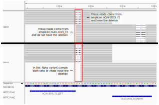

Update May 2022
For participants who attended our workshops prior to May 2022, please note that this lesson has been updated to use a more recent Nextflow pipeline. We recommend switching to the new pipeline introduced here, but if you want to use the older pipeline you can still access the previous version of the lesson here.
Lineage Assignment and Variant Classification
Questions
- What are the main variant annotation conventions for SARS-CoV-2?
- How can I assign sequences to lineages and classify them as variants of interest/concern?
- How can I visually explore the results of my variant analysis?
Learning Objectives
- Understand variant annotation conventions used by Gisaid, Pango, Nextstrain and WHO and how they relate to each other.
- Assign sequences to Pango lineages using
pangolin. - Interactively explore mutations in the assembled genomes and their phylogenetic context using Nexstrain’s tools.
This section has an accompanying slide deck.
SARS-CoV-2 Variants
As viruses (or any other organism) evolve, random DNA changes occur in the population, for example due to replication errors. Many of these changes are likely to be neutral, meaning that they do not change the characteristics of the virus in any significant way. Neutral changes tend to drift in the population, increasing or decreasing in frequency in a random way, but most likely end up disappearing due to their low starting frequency in the population.
On the other hand, advantageous mutations can occur, which lead to changes in the characteristics of the virus that are beneficial for its spread in the population (e.g. high transmissibility, resistance to immune response or vaccines, etc.). Such beneficial mutations will therefore experience positive selection, potentially leading to their increase in frequency in the population as they spread to more and more hosts.
Viruses carrying those advantageous mutations may, over time, aquire other advantageous mutations that further increase their fitness and, therefore, their frequency in the population. One way to visualise this is by looking at a phylogenetic tree showing the relationship between sequences (based on their similarity) and how groups of sequences change over time.

Example of global phylogeny from the Nextstrain public server. Colours show different Nextstrain clades. (Screenshot taken Feb 2022)
In the figure above, which shows SARS-CoV-2 samples from across the world, we can see groups of similar sequences rapidly “expanding” at certain points in time. Such groups of sequences, which share a collection of DNA changes, are referred to as SARS-CoV-2 variants (see box below about the ambiguous meaning of this term). In an effort to understand the spread of the virus and monitor situations of increased occurrence of such variants, several groups and institutions have developed a system to classify groups of SARS-CoV-2 sequences as variants of interest and variants of concern.
A full explanation and definitions of such variants is given in the World Health Organisation (WHO) variants page The main classification systems currently in use are:
In practice, there is a big overlap between these different nomenclature systems, with WHO variants having a direct match to Pango lineages and Nextstrain clades. In fact, the different teams work together to try and harmonise the nomenclature used, and thus facilitate the interpretation of sequence analysis.
The two most popular systems - Nextclade and Pangolin - have slightly different levels of resolution. Nextclade’s nomenclature system was developed to highlight diversity patterns at a larger scale, allowing discussions of SARS-CoV-2 diversity at a global level and over larger time scales. On the other hand, Pangolin’s nomenclature system is more fine-grained, aiming to follow the dynamics of the pandemic as it unfolds. The two systems are complementary to each other, and our analysis of SARS-CoV-2 sequences should include both tools.
What is a variant?
It is important to note that the term variant can be sometimes ambiguous.
The term “SARS-CoV-2 variant” usually refers to the WHO definition of variants of concern/interest (e.g. the Alpha, Delta and Omicron variants), which includes sequences containing a collection of several nucleotide changes that characterise that group. According to this definition, we have two variants in the example below (samples 1 & 2 are one variant and samples 3 & 4 another variant).

However, in bioinformatic sequence analysis, a sequence variant refers to an individual change in the DNA sequence (a SNP or an insertion/deletion). Using this definition, in the example above we have 5 variants: 3 SNPs and 2 indels. In the Consensus Sequence section, we saw that one of our workflow steps was “variant calling”. This was the definition of variant we were using: identifying individual SNPs and/or indels relative to the reference genome, from our sequencing data. This is also reflected in the one of the common file formats used to store SNP/indel information, the VCF file, which means “Variant Call Format”.
Sometimes the term “mutation” is used to refer to SNP/indel variants. For example see this definition from the COG consortium.
Because of this ambiguity, the terms “lineages” or “clades” are often used instead of “variants” when referring to groups of similar SARS-CoV-2 sequences, because they have a phylogenetic interpretation.
Pangolin

The first tool we will cover is called pangolin and uses the Pango nomenclature system. The main steps performed by this tool are:
- Multiple sequence alignment of our samples against the Wuhan-Hu-1 reference genome, using the
minimap2software. - Assigning our sequences to lineages based on the current global phylogeny. Two methods/software are available:
- pangoLEARN (default) uses a pre-trained machine learning model.
- UShER uses a more classic parsimony-based method, but highly optimised for working with large numbers of sequences.
- Classifying our sequences according to the WHO nomenclature of variants of interest/concern using the
scorpiosoftware.
Pangolin runs as part of the nf-core/viralrecon pipeline we used. The model to classify variants may change over time as more public sequences become available and nomenclature rules are updated. Therefore, it important to know which version was used, as the results may change in the future if we were to run it again. This information is provided in the multiqc_report.html generated by the pipeline, under the section “nf-core/viralrecon Software Versions”.
The detailed results of the Pangolin analysis are detailed in the multiqc_report.html file under the section named “Pangolin”. The table contains information about the lineage assignment analysis from Pangolin, including WHO variants of concern identified using the Scorpio software. A detailed explanation of the columns of this file is given in the Pangolin documentation page.
Snapshot of the Pangolin section of the nf-core/viralrecon MultiQC report. The table shows which Pango lineage each sample was assigned to, the WHO variant classification (“S Call” column, which stands for Scorpio call, the software used to do this classification) and several quality metrics. An explanation of these columns is given in the Help button on the top-right of the table or on the Pangolin documentation page. Any samples that fail basic QC checks from Pangolin are marked as “Fail” on the “QC Status” column.
Web Application
This tool can also be run separately using a web application, which only requires us to provide with a FASTA file of consensus sequences. This may desirable to re-run samples using the latest version of the Pangolin software and SARS-CoV-2 variant databases.
The results from the web application can be downloaded as a CSV file, which contains a table similar to the one obtained from our pipeline.
Nextclade

Another system of clade assignment is provided by nextclade, which is part of the broader software ecosystem Nextstrain.
Nextclade performs similar steps to Pangolin, with some differences in the algorithms that are used:
- Each sequence is aligned with the Wuhan-Hu-1 reference genome using a local alignment algorithm.
- Samples are placed in the global phylogeny using a distance-based metric (placing the sequence on the tree where it has the highest similarity with).
- Clade assignment is done based on the previous phylogeny placement step.
You can find more details about Nextclade’s methods on its documentation. Nextclade also provides several quality control metrics, which are very useful to identify problematic samples.
Nextclade also runs as part of the nf-core/viralrecon pipeline we used. The clade assignment can be seen in the multiqc_report.html under the first section of the report named “Variant calling metrics”.
However, Nextclade provides more information that can be useful to analyse our consensus sequences, including an evaluation of the quality of our sequences based on how many missing bases (‘N’) we have and the mutations that are present in the sequence. These results are provided as a series of CSV files by the pipeline. However, Nextclade provides a web application that makes this analysis easier.
Web Application
Nextclade offers an interactive application, which can be used to run its analysis on a FASTA file with sequences:
- Go to nextclade.org.
- Select SARS-CoV-2 and click Next.
- Click Select a file to browse your computer and upload the FASTA file with the cleaned consensus sequences (
results/clean_consensus_sequences.fa). - Click Run.
Nextclade will show a progress of its analysis at the top of the page, and the results of several quality control metrics in the main panel (see Figure).

Overview of the Nextclade web interface.
When using the Nextclade web application, the data does not leave your computer, so privacy concerns are not an issue.
In this exercise we will work with 48 consensus sequences from the UK, processed with the nf-core/viralrecon pipeline and covered in the previous section.
Go to nextclade.org and load the sequences provided in 03-consensus/uk_illumina/preprocessed/clean_consensus_sequences.fa.
- Are there any samples that were classified as “bad” quality? If so, what is the main reason?
- Sort the table by the “Clade” column. Looking at the mutations in gene S on the right, you can see that all sequences classified as “Alpha” have a deletion in positions 21992-21994. Samples classified as “Delta” do not have this deletion and instead have a deletion in positions 22029-22034. However, there is one exception: sample GB39, classified as “Delta” has both deletions. Investigate if this mutation is accurate using IGV:
- Open the BAM alignment file for this sample (the alignment file is in
results/viralrecon/variants/bowtie2/GB39.ivar_trim.sorted.bam). - Open the BAM alignment file for one of the “Alpha” samples as a comparison.
- Open the ARTIC primer files (two BED files found in
resources/primers/). - Go to the position where this deletion was identified and investigate if it seems clear from the mapped reads.
- Open the BAM alignment file for this sample (the alignment file is in
Answer
Question 1
After loading the samples to the Nextclade web application, we can see that, generally, these samples have high quality as very few are highlighted by Nextclade’s analysis.
Sorting the table by the “QC” column, we can see two samples with bad quality (red) and one with mediocre quality (yellow).
There are separate reasons for the two bad quality samples:
- Sample GB16 has low quality due to a high number of missing bases.
- Sample GB39 has low quality due to the occurrence of too many “private mutations”. These are mutations that are only found in this sample, compared to other samples present in Nextclade’s background sequence tree. As we don’t usually expect too many new mutations to occur in a new sample (the mutation rate of SARS-CoV-2 is around 2 new mutations per month), the occurrence of too many private mutations could indicate sequencing quality issues.
Question 2
Sort the table by the “Clade” column. Looking at the mutations in gene S on the right, you can see that all sequences classified as “Alpha” have a deletion in positions 21992-21994. Samples classified as “Delta” do not have this deletion and instead have a deletion in positions 22029-22034. However, there is one exception: sample GB39, classified as “Delta” has both deletions. Investigate if this mutation is accurate using IGV:
- Open the BAM alignment file for this sample (the alignment file is in
preprocessed/variants/bowtie2/GB39.ivar_trim.sorted.bam). - Open the BAM alignment file for one of the “Alpha” samples as a comparison.
- Open the ARTIC primer files (two BED files found in
resources/primers/). - Go to the position where this deletion was identified and investigate if it seems clear from the mapped reads.
By sorting the table by “Clade”, we can see that although sample GB39 was classified as a Delta variant, it has two deletions in gene S that are present in Alpha variants, as shown in this snapshot (click the image to view a bigger size):

As we investigate one of these in more detail from the BAM file (opening it in IGV), we can see that there is an inconsistency between reads coming from the PCR fragment “nCoV-2019_72” and those reads coming from the “nCoV-2019_73” fragment. In some of those reads the deletion is present, but in others it is not. If we look at an Alpha variant sample (for example GB43) we can see that this deletion is present in both cases.

If we thought this sample was crucial for public health investigation, then this would require further investigation by doing a PCR with new primers and Sanger-sequencing the fragment, for example.
Summary
Key Points
- Groups of similar SARS-CoV-2 sequences are classified into lineages or clades by different groups. The main nomenclature systems in use are Nextstrain, Pangolin and GISAID.
- In addition, the World Health Organisation (WHO) classifies some forms of SARS-CoV-2 as variants of concern or variants of interest. These are forms of the virus that have been determined to have a significant public health impact.
- Both Pangolin and Nextclade assign consensus sequences to lineages/clades and additionally identify those that correspond to WHO variants of concern. Both of these are run as part of the
nf-core/viralreconpipeline, but can also be run using a web application: - Besides clade assignment and variant classification, Nextclade provides additional analysis such as identification of mutations and quality control metrics that can be used to identify problematic samples.